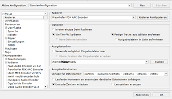

freac - free audio converter
Dieser Artikel wurde für die folgenden Ubuntu-Versionen getestet:
Ubuntu 17.10 Artful Aardvark
Ubuntu 16.04 Xenial Xerus
Zum Verständnis dieses Artikels sind folgende Seiten hilfreich:
fre:ac  (früherer Name BonkEnc) ist ein freier Audiokonverter und Audio-CD-Ripper mit Unterstützung für verschiedene populäre Formate und auf Multicore-CPUs optimierte Encoder.
(früherer Name BonkEnc) ist ein freier Audiokonverter und Audio-CD-Ripper mit Unterstützung für verschiedene populäre Formate und auf Multicore-CPUs optimierte Encoder.
Mit fre:ac können Audio-CDs gerippt und als MP3- oder WMA-Dateien gespeichert werden. Auch können einzelne Dateien, ganze Ordner, bis zu kompletten Musikbibliotheken in andere Formate konvertiert werden. Die Struktur der Verzeichnisse und Dateinamen bleiben dabei erhalten.
Derzeit werden die (Container-)Formate unterstützt:
Über libav können weiterer Formate verwendet werden. fre:ac wird aktiv entwickelt, die Unterstützung weitere Formate ist geplant.
Der integrierte CD-Ripper nutzt CDDB über freedb. Hierbei werden automatisch Titelinformationen abgefragt und als ID3v2 oder in anderen Tag-Formaten gespeichert.
Installation¶
fre:ac ist nicht in den Ubuntu-Paketquellen enthalten. Snapshots für Linux können von der Website des Entwicklers  oder über fre:ac - free audio converter heruntergeladen und benutzerübergreifend mit Root-Rechten[1] nach /opt extrahiert[2] werden. Das darin enthaltene Programm freac ist ausführbar.
oder über fre:ac - free audio converter heruntergeladen und benutzerübergreifend mit Root-Rechten[1] nach /opt extrahiert[2] werden. Das darin enthaltene Programm freac ist ausführbar.
Alternativ kann das Archiv nur für den jeweiligen Benutzer in dessen Homeverzeichnis extrahiert werden.
Zudem liegt als Open Source Software der Source Code  bereit, aus dem fre:ac selbst kompiliert[3] werden kann. In diesem Fall die Readme-Datei beachten.
bereit, aus dem fre:ac selbst kompiliert[3] werden kann. In diesem Fall die Readme-Datei beachten.
Fraunhofer-Codec-Installation¶
Fraunhofer AAC wird bei installiertem Paket libfdk-aac0 bis Xenial bzw. libfdk-aac1 in Zesty und höher automatisch erkannt. Alternativ steht Freeware Advanced Audio Coder (faac) zur Verfügung. Es kann entweder das Format faac oder Fraunhofer und/oder Apple aac verwendet werden, bei installiertem Fraunhofer und/oder Apple aac kann nicht auf faac zurückgegriffen werden.
Installation der Apple-Hardware-Unterstützung, für alac- und qaac-Unterstützung¶
Die Installation deŕ Apple-Hardware-Unterstützung ist derzeit nur über Wine möglich. Es werden zudem die p7zip-Packprogramme benötigt.
Ubuntu 16.04¶
p7zip (universe)
p7zip-full (universe)
p7zip-rar (universe)
wine
 mit apturl
mit apturl
Paketliste zum Kopieren:
sudo apt-get install p7zip p7zip-full p7zip-rar wine
sudo aptitude install p7zip p7zip-full p7zip-rar wine
Ab Ubuntu 17.04¶
p7zip (universe)
p7zip-full (universe)
p7zip-rar (universe)
wine-stable
mit apturl
Paketliste zum Kopieren:
sudo apt-get install p7zip p7zip-full p7zip-rar wine-stable
sudo aptitude install p7zip p7zip-full p7zip-rar wine-stable
Dann fre:ac starten, damit Wine konfiguriert und eingerichtet wird.
Danach wird die jeweils aktuelle iTunesSetup.exe heruntergeladen, die Apple-Hardware-Unterstützung daraus extrahiert und mit Wine installiert.
mkdir $HOME/qaac cd $HOME/qaac && \ wget \ https://secure-appldnld.apple.com/itunes12/031-86054-20161212-CC264356-BE1D-11E6-BD92-B3E982FDB0CC/iTunesSetup.exe && \ 7z e -y iTunesSetup.exe AppleApplicationSupport.msi && msiexec -i AppleApplicationSupport.msi
Jetzt sollte in fre:ac im Kodiererfeld automatisch "Core Audio AAC/ALAC Encoder" erscheinen.
Bedienung¶
Das Programm kann über Terminal[4] mit dem Befehl
/opt/freac*/freac
oder über einen Eintrag im verwendeten Desktop-Menü gestartet werden[5]. Dazu wird eine .Desktop-Datei in einem Editor[6] erstellt. Vorlage:
Desktop Entry] Comment[de_DE]= Comment= Exec=/opt/freac-20170729-linux/freac GenericName[de_DE]= GenericName= Icon=/opt/freac-20170729-linux/icons/freac.png MimeType=audio/x-wavpack;audio/x-wav;audio/x-vorbis+ogg;audio/x-opus+ogg;audio/x-musepack;audio/ogg;audio/mpeg;audio/mp4;audio/mp2;audio/ac3;audio/aac; Name[de_DE]= Name= Path=/opt/freac-20170729-linux/ StartupNotify=true Terminal=false TerminalOptions= Type=Application X-DBUS-ServiceName= X-DBUS-StartupType= X-KDE-SubstituteUID=false X-KDE-Username=
Namen und/oder Pfade sind ggf. noch anzupassen.
Das Programm ist weitgehend selbsterklärend. Im Hauptfenster befinden sich oben vier Reiter:
"Datei" - Datei/en, Verzeichnis oder Musik-CD-Auswahl
"Datenbank" - CDDB-Abfrage und Senden von Informationen.
"Optionen" - allgemeinen Einstellungen, diese sind ist sehr umfangreich und verlangen solides Grundwissen; zudem existiert ein Codec-Auswahlfeld mit Einstellmöglichkeiten.
Hinweis:
Für Musik ist bei AAC der LC-Modus vorzuziehen.
"Kodieren" - Das Codierfeld zum Starten, Stoppen und Unterbrechen des Encodiervorgangs .
Einstellungen¶
Die Einstellungen sind vielfältig, per Online-Hilfe sind Erklärung abrufbar.

Neben integrierten Codecs wie für mp3, Opus sowie für verlustlose Komprimierung wie flac können einige externe Codecs, darunter auch das Fraunhofer aac und das Apple-Format qaac (Stand 2017), verwendet werden, siehe dazu die FAQ .
Bekannte Probleme¶
Es gibt folgende Einschränkungen für das Eingabeformat:
FAAC, FDK AAC, VisualOn AAC:
Audiodaten müssen in 8, 11.025, 12, 16, 22.05, 24, 32, 44.1, 48, 64, 88.2 oder 96 kHz vorliegen
LAME:
Audiodaten müssen in 8, 11.025, 12, 16, 22.05, 24, 32, 44.1 oder 48 kHz vorliegen, können von LAME konvertiert werden
Es gibt noch keine Linux-Pakete für fre:ac, so dass Abhängigkeiten manuell installiert werden müssen.
Systemvoraussetzungen¶
minimale Hardware-Voraussetzungen:
Intel Pentium 4, AMD Athlon 64, PowerPC G4 oder ARMv5 Prozessor
512 MiB RAM
100 MiB freier Festplattenplatz
empfohlene Hardware-Spezifikationen:
Intel Core i3 oder AMD Phenom II Prozessor
1 GiB RAM
1 GiB freier Festplattenplatz
Deinstallation¶
Um das Programm zu deinstallieren, müssen das Verzeichnis, in welches das Programm extrahiert worden ist, sowie die .desktop-Datei gelöscht werden.
Links¶
http://www.andrews-corner.org/linux/qaac.html
Apple-alac- und qaac-Codec unter Ubuntu installieren.
- Erstellt mit Inyoka
-
 2004 – 2017 ubuntuusers.de • Einige Rechte vorbehalten
2004 – 2017 ubuntuusers.de • Einige Rechte vorbehalten
Lizenz • Kontakt • Datenschutz • Impressum • Serverstatus -
Serverhousing gespendet von